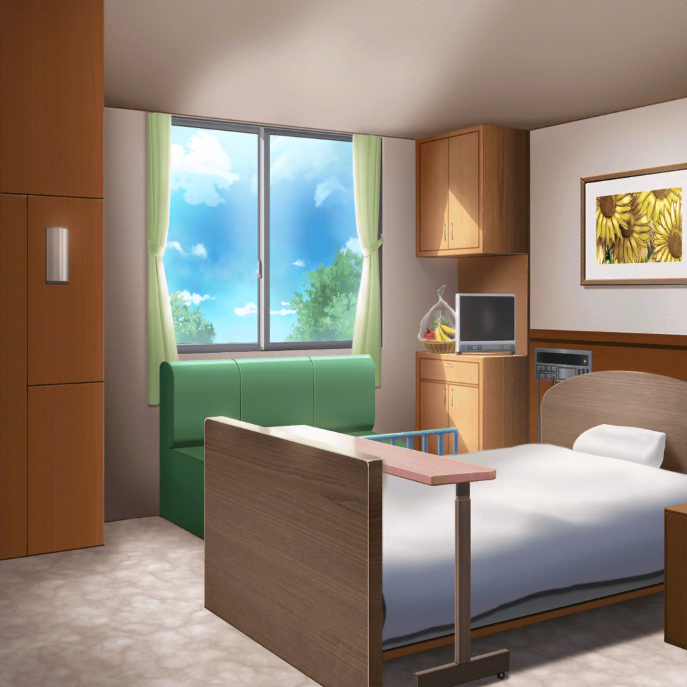

翌日
病室
ひまり
つぐー、調子どう？
つぐみ
ひまりちゃん、巴ちゃん！ 来てくれたんだね
巴
よっ。顔色、思ったよりいいな
つぐみ
うん。もうほとんどよくなったの。疲れで熱が出ただけみたい。
……みんなには迷惑かけちゃって、ごめんね
ひまり
迷惑なんて、そんな訳ないじゃん！
つぐがよくなってよかったよー！
巴
ああ。
ほんと、生徒会室で倒れてるのを見た時はどうなるかと思ったぜ
つぐみ
え、えへへ……。もう無理はしません！
でも、あの時２人が来てくれて本当によかったよ。
そういえば、蘭ちゃんとモカちゃんはどうしてるの？
ひまり
あー、それは……
巴
……つぐに隠してても、仕方ないか。実は……
つぐみ
……そっか。そんなことがあったんだね
巴
蘭のことが心配だったとはいえ、アタシも感情をぶつけすぎた。
蘭には本当に申し訳ないことをしたよ。
……って、今みたいに、蘭にもうまく謝れればいいんだけどな
つぐみ
蘭ちゃんも、きっともう一度話せばわかってくれるよ
巴
……だと、いいんだけど……
ひまり
……やっぱり、５人全員揃ってないとちょっと寂しいね
つぐみ
私達、
みんなで一緒にいられるようにって、バンドはじめたのに……
巴
……だな。
そもそものきっかけは、
中２の頃、クラス替えで蘭だけが別のクラスになったこと
巴
それが原因で蘭は、授業に出ずに屋上で過ごすようになって……
ひまり
どうしたら前みたいにみんな一緒の時間を作れるかな？
って考えてた時に、
つぐが『バンドやろうよ！』って言ったんだよね
巴
あの時は、突然何を言うんだって思ったけどな
つぐみ
あ、あはは……
巴
けど、バンドを組み始めてから蘭は、授業に出るようになった。
屋上は……蘭だけじゃなくて、
アタシら５人の拠点みたいになったっけ
つぐみ
うん、そうだったね
ひまり
結成してすぐの頃に屋上で見た夕焼けがチョーキレイでさ、
それでバンド名を夕焼けって意味の『Afterglow』にしたんだよね
巴
英和辞書で片っ端からそれっぽい単語調べたっけ
ひまり
そうそう！ なんか、思い出すと笑える……！
つぐみ
ふふっ。バンドをはじめたての頃は、
わからないことばっかりだったけど……それも楽しかったよね。
みんなで一緒に考えて、いろんな事、経験して……
ひまり
……蘭は、今、バンド楽しいのかな
つぐみ
……え？
ひまり
最近、バンドしてる時の蘭、
つらそうな顔ばっかりしてる気がするの。
演奏も歌も、調子悪そうだし……
巴
……もしかして蘭、バンドと家のことで、板挟みになってるのかな
つぐみ
バンドが……バンドがもし、
蘭ちゃんを苦しめるものになっているんだとしたら、
もう、やめたほうがいいのかな……
ひまり
そんな……！
つぐみ
バンドは、すごく楽しいよ。
みんなと一緒に演奏するのもすごく好きだけど……
でも、つらい思いをしてる友達のことを放ってはおけないよ……
巴・ひまり
……
巴
アタシもこれ以上蘭をつらい気持ちにさせたくはない。
アタシ自身、この間の事で蘭につらい顔をさせてるから……
もう、同じことはしたくない
巴
ひまり、どう思う？
ひまり
さみしいけど……でも、これが蘭のためになるのなら
お休みしたほうがいいのかな
巴
蘭自身が落ち着いたら、またバンドをやればいい。
ガルジャムだって、きっとまた出る機会があるはずだ。
今は、蘭のことを一番に考えよう
ひまり
うん、そうだね

商店街
モカ
ねー、ホントにパン買って行かなくてへーき？
蘭
それはモカが食べたいだけでしょ？
モカ
違うよ～。つぐのお見舞いに持って行くんだよぉ～。
あたしが食べたいなんて、まさかそんなー
蘭
はいはい。……ほら、面会の時間終わっちゃう。急ぐよ
モカ
はーい。トモちん達も来てるのかな？
蘭
どう……だろう
モカ
いるといいねー
蘭
……ん
モカ
蘭、顔こわいよー？
キンチョーしてんの～？
蘭
べ、別にこれが普段の顔だし。緊張もしてない！
……もし、巴達がいたら……ちゃんと謝って、それで……
蘭
……バンド続けたいって、ちゃんと伝えるから
モカ
うん
蘭
行こう。まずはつぐみに、会いにいかなくちゃ